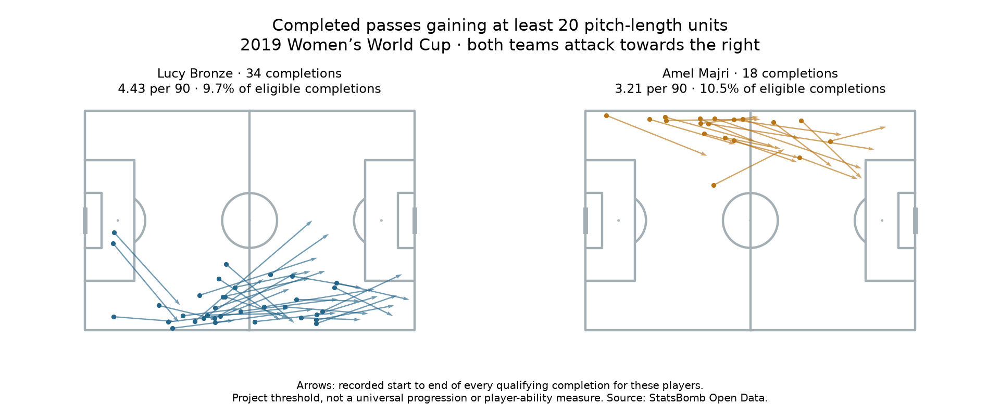

Football Analytics Research Lab · Recruitment communication sample
Two fullback profiles: what to review next
Question: What passing activity is visible, and what observations would help interpret it? These familiar examples have different starting sides; they are not top-ranked candidates or interchangeable recruitment options.
Lucy Bronze
England Women's
7 right back starts · 691.2 registered minutes
- 45.57 completed passes /90; 350/436 eligible attempts (80.3%).
- Fixed advancement: 34 · 4.43/90. Alternative: 36 · 4.69/90.
- Starts beyond x=100: 20 (5.7%).
Amel Majri
France Women's
5 left back starts · 504.2 registered minutes
- 30.70 completed passes /90; 172/222 eligible attempts (77.5%).
- Fixed advancement: 18 · 3.21/90. Alternative: 19 · 3.39/90.
- Starts beyond x=100: 20 (11.6%).

What the figures support
Bronze recorded higher completed-pass activity per 90 in her selected matches. Majri's fixed-rule share was slightly higher (10.5% versus 9.7%); middle-third shares were close (12.5% versus 12.1%). These observations do not isolate ability. Changing the rule adds two Bronze passes and one Majri pass without validating either metric as action value.
Next action: review the examples below, record observations and check recurring patterns in additional comparable matches. No signing recommendation is supported by this brief alone.
Prepared review events
- Lucy Bronze vs Scotland W · 2019-06-09, P1 23:43
Fixed-rule example; x=10.4 → 32.5. Recipient: Nikita Parris. Not reviewed. - Lucy Bronze vs Scotland W · 2019-06-09, P2 85:02
Additional alternative-rule example; x=95.6 → 109.7. Recipient: Georgia Stanway. Not reviewed. - Amel Majri vs Korea Republic Women's · 2019-06-07, P1 02:30
Fixed-rule example; x=53.9 → 93.4. Recipient: Kadidiatou Diani. Not reviewed. - Amel Majri vs Nigeria Women's · 2019-06-17, P2 94:48
Additional alternative-rule example; x=106.9 → 114.8. Recipient: Eugénie Le Sommer. Not reviewed.
Ask: what options and pressure were present, did the recipient control the ball, and what happened next? These examples illustrate definitions and are not representative samples. Match/period clocks are not video-file timestamps. Full event IDs and source hashes are in the evidence.
Definitions and limits
Eligible non-restart, possession-team passes with known outcomes; qualifying starting-role fixtures only. Registered minutes include recorded added/extra time and temporary absences, excluding halftime and shootouts. Later role changes are not split into position-specific time.
Fixed advancement: completed x gain ≥20 on the 0–120 scale. Alternative: positive gain ≥min(20, half the remaining x distance). Possession, opponents, pressure and difficulty are not adjusted for. The initial three-start filter does not guarantee reliability. This historical dataset does not establish current form, availability or transfer value.